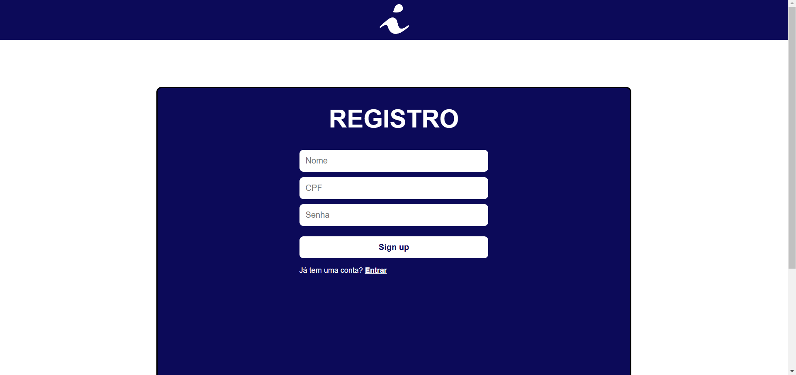
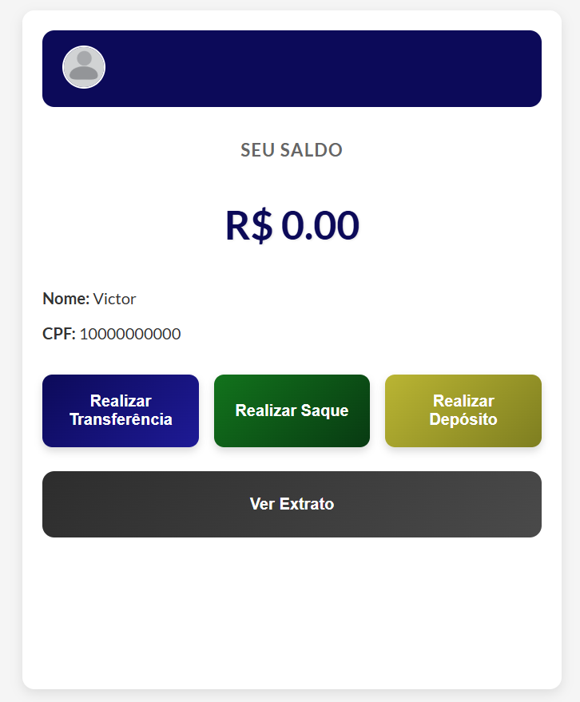
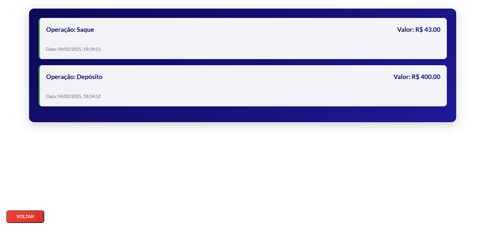

O projeto que desenvolvemos foi um sistema bancário que usa criptografia hash para proteção de dados, implementamos um sistema de registro e login, além do sistema de transações bancárias que envolvem: Saque, depósito e transferência. Junto a isso também criamos uma seção para os extratos bancários que armazena qualquer tipo de transação feita pelo ususário
Página de registro, simples e prático.
Página do usuário mostrando saldo e operações disponíveis
Página de extratos bancários detalhados com todas as transações realizadas, oferecendo visibilidade total sobre as finanças.
